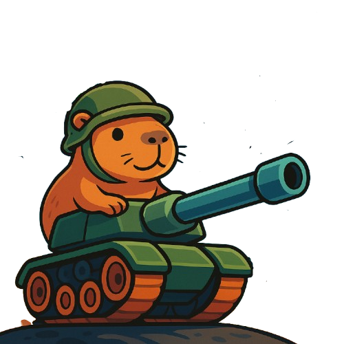

Personajes
En esta entrega se presentan 5 personajes con características y habilidades únicas. Sus nombres fueron tomados de la lengua guaraní como una forma de homenajear la cosmovisión de este pueblo originario, que valoraba profundamente la conexión con la naturaleza y el equilibrio entre las especies.
El Comandante
Arami
Katu
Jasy
Pari
Tanques
Chatarra 1
AlgaTank
Tanque Lunar
Enemigos
Rotox
Korpio
CrioGolem
AlfaBot
Cordy
Historia
En un futuro no tan lejano, la Tierra cambió para siempre. El avance de la humanidad fue implacable: los humedales, antiguas tierras libres y pacíficas, fueron reemplazados por countries de lujo, cemento y seguridad privada. Las especies nativas fueron desplazadas, pero una en particular decidió resistir: los carpinchos. Liderados por El Comandante, un veterano carpincho estratega, organizaron la huida más grande jamás vista. Con ingenio, chatarra reciclada y una voluntad inquebrantable, construyeron naves y tanques con la esperanza de encontrar un nuevo hogar entre las estrellas. Pero el universo no era el paraíso prometido. Lo que encontraron fue un caos interplanetario: mundos invadidos, alianzas rotas, razas hostiles, recursos escasos. ¿Defender, atacar, sobrevivir? La decisión... está en tus manos.
Impacto Cultural
Carpitanks no es solo un juego de estrategia y acción, es también una propuesta que invita a la reflexión sobre problemáticas ambientales y éticas actuales, a través de una narrativa entretenida y personajes carismáticos. El conflicto inicial del juego parte de una realidad reconocible: la urbanización desmedida y la destrucción de hábitats naturales. La resistencia de los carpinchos representa a todas las especies desplazadas por el avance humano, cuestionando las prioridades de la sociedad moderna y visibilizando el valor de los ecosistemas.
¿Cómo se juega?
- Elegí un personaje
- Elegí un tanque
- Barra espaciadora dispara
- Mouse apunta
- Click del mouse mueve el tanque
- Tecla 1 y 2 cambia de nivel